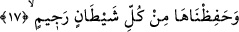

“Ve seyredenler için” bu muhtelif görünümlere sâhip burçlarla, seyyâr ve sâbit
gezegenlerle “onu” gökyüzünü “süsledik.” Bu mânâya göre, süslemenin mânâsı
âşikârdır.
Ya da: “Düşünen, ibret alan, onu takdir edenin kudretine, onu çekip çevirenin
hikmetine delil sayanlar için süsledik.” Bu mânâya göre gökyüzünün süslenmesi, güzel
eserler ortaya koyacak şekilde eşsiz bir nizâm üzere tertip edilmesi demektir.
Göğün süslenmesinin seyreden veya tefekkür eden kimselere tahsîs edilmesi,
gökyüzünden faydalananın sâdece onlar olması, diğerlerinin bakışının ise bakmamakla
eşanlamlı olması sebebiyledir.
Sa‘dî der ki:
İki göz Yaratıcı’nın san’atını seyretmek için iyidir
Kardeşinin aybını görmekten gözlerini aşağı tut, ey dost
Nefis ve hevâ tozu senin aklının gözünü kapatmış
Hevânın zehirleri ömrünün ekinini yakmış
Gaflet sürmesini gözünden temizle
Yoksa yarın toprağın gözüne sürme olursun
Hızlı hareket ettiği için bâzı yıldızlara ‘seyyâre’ adı verilmiştir. Bâzıları ise devamlı
olarak aynı konumda sâbit olduklarından ya da çok az veya çok ağır hareket ettikleri
için ‘sâbite’ adı verilmiştir. Çünkü gök cisimleri durağan değildir.
Yeryüzündeki her şey nasıl yerin süsü ise varlığından haberdar olunan ve olunmayan
bütün yıldızlar da gökyüzünün süsüdür.
17. Onu taşlanmış (kovulmuş) her şeytandan koruduk.
“Onu” göğü, yıldızlarla “taşlanmış (kovulmuş) her şeytandan koruduk.” Artık oraya
yükselip oradakilere vesvese veremezler ve onlarla ilgili bir tasarrufta bulunamazlar,
hallerine de vâkıf olamazlar. Âyette bir izâfet olduğu görülmektedir. Çünkü ‘koruma’
şeytanın bizzat kendisinden olmaz. Buradaki “her” kelimesinde, eûzüdeki ‘eş-şeytâni’r-
racîm’deki lâm-ı ta‘rîfin tüm cinsleri içine aldığına delâlet vardır. Bahru’l-ulûm’da
böyle geçmektedir.
Bazıları şöyle der: “İstiâzedeki şeytanla bütün şeytanlar mı yoksa sâdece kişi ile
berâber olan şeytan (karîn) mı kasdedilmektedir? Öyle görünüyor ki bizim hakkımızda
kasdedilen, kişi ile berâber olan şeytandır. Allah Teâlâ: “Rahman’ı hatırlamaktan
gafil olanlara yanlarından ayrılmayan bir şeytanı musallat ederiz.” (ez-Zuhruf,
43/36) buyurmuştur.